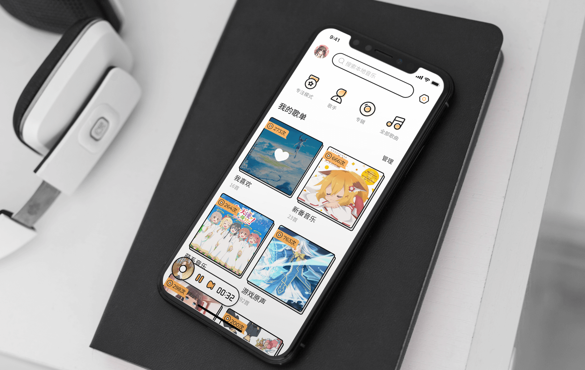

因乐 - 两步定制你的音乐播放器
简介
千人千面，每个人的都有自己的审美和品味，但不是都有机会亲手设计出中意的播放器，而且就算耗费时间和精力，最后也很有可能找不到喜欢的那款。这也是为什么会有因乐这个小项目，目的就是为了帮助用户轻松的定制喜欢的本地音乐播放器。
整个项目最终设计了 7 种整体风格、15+ 种播放界面以及多种颜色，用户可以很方便的进行切换。为了适应本地化不希望被打扰的应用场景，加入了专注模式，旨在排除网络干扰，提高效率。
负责范围和项目时间
- 交互设计
- UI 设计
- Logo 设计
- 2019.08 ~ 2019.09
问题一：定制页面的度如何把握？
目前市面上音乐软件的自定义界面可大致分为 2 种：
1、颜色的替换（页面和图标）
2、整个界面的替换（各种皮肤）
第一种自定义只是替换主要页面的主题色和图标的颜色，其余的页面基本没有改变。
第二种与其说是皮肤替换，倒不如说是另一个 APP 了，有点浮夸，把播放页面改的面目全非了。
基于现状，想设计一个介于两者之间的自定义，既不会不痛不痒，也不会浮夸。所以，决定从界面的最基本元素上下手，看能不能达到目的。
界面的基本元素，无非包括文字、图标、图片、间距、排版等，单从一个方面着手就能诞生无数种风格。
音乐播放器的本质目的是播放音乐，需要摆在第一优先级的位置，界面的自定义不能这条线，最多可以放到第二优先级。因此，对大多没有设计相关知识的用户来说，傻瓜式的定制更合适。就像上述的 2 种自定义方式，用户只要点击一下就能切换到喜欢的风格。
最初阶段，尝试过让用户自定义界面的很多元素，比如选择图标种类和颜色、选择文字格式、排布播放界面元素等。如果把自定义比作装修的话，这种方式就是把所有的原料给用户，需要用户亲自从刷墙一点一点开始，显然不符合预期。选择多了用户反而会迷茫。

作为设计师，肯定接触过很多种设计风格，但风格之类的术语是为了方便在设计的圈子里传播而存在的。用户可不是设计师，对很多人来说只有「好看」和「难看」两种风格。于是便想到了把界面设计成几种不同的风格，让用户直接去挑选，再预置几种颜色，就可以组合成几十种了。
定制流程的有多种解法，常见的有这两种：
1、串行
2、并行
串行方案常见于应用的第一次使用，比如引导用户填写基本信息、选择兴趣等。这种方案的特点是引导性和专注性强，但通常是一次性的，不适合反复确认。
并行方案常见于个人设置页面，比如虚拟形象的装扮。这种方案的特点是自由度比较高，所有的操作聚焦于一个最终内容上，可以反复确认。缺点是引导性不够强。
最终决定采用第二种即并行方案，用户可以改变的元素包括以下几种：
1、页面整体风格
2、播放界面（每种风格有多个播放界面可供选择）
3、图标颜色
问题二：如何利用本地播放的特点？
本地播放器和在线播放器最大的不容在于，本地播放的全部是本地音乐，是不需要联网的。而且，有本地播放需求的一般分为三种：
1、不想被网络打扰
2、听网上没有的音乐
3、播放小众音乐格式
为了更加方便第一类用户，特意加入了专注模式，方便用户能够高效率利用这段专注的时间。
当开启专注模式后，会有专门的锁屏提醒用户专注时长。
设计图展示
全部风格的页面展示。


设计总结
这次的设计中尝试了如何用同样的元素设计出不同的风格，对组成界面的各个元素有了更深的理解。通过设计优雅的解决问题，是作为设计师做幸福的事情了吧。
如有兴趣合作，欢迎扫码加微信备注「合作」